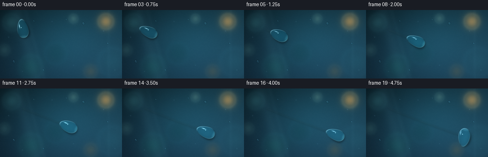
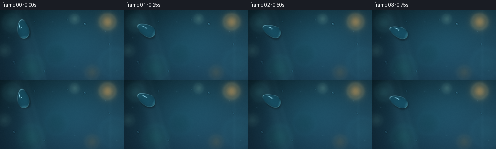

CODING AGENTS AS PIXEL WORLD MODELS
traex/GPT-5.6-Sol · phygen_037
点击播放 · 原生 RGB 像素
逐轮保存的候选
回放视频、检查图与代码变化。
每份候选均可单独播放。实际图片检查记录在下方工具轨迹中。
候选 01播放与检查图
点击播放 · 原生 RGB 像素


展开代码变化
--- 上一保存版本
+++ 本次保存版本
@@ -0,0 +1,222 @@
+from pathlib import Path
+import math
+import numpy as np
+from PIL import Image, ImageDraw, ImageFilter
+import artifact_io
+
+# Deterministic, supersampled macro renderer for a drop moving over glass.
+W, H, N = 256, 144, 20
+SS = 3
+w, h = W * SS, H * SS
+rng = np.random.default_rng(3701)
+Y, X = np.mgrid[0:h, 0:w].astype(np.float32)
+xf, yf = X / SS, Y / SS
+
+
+def smoothstep(a, b, x):
+ q = np.clip((x-a)/(b-a), 0.0, 1.0)
+ return q*q*(3.0-2.0*q)
+
+
+def bilinear(img, sx, sy):
+ """Bilinear RGB lookup for a same-sized coordinate field."""
+ sx = np.clip(sx, 0, w-1.001)
+ sy = np.clip(sy, 0, h-1.001)
+ x0 = sx.astype(np.int32); y0 = sy.astype(np.int32)
+ x1 = np.minimum(x0+1, w-1); y1 = np.minimum(y0+1, h-1)
+ wx = (sx-x0)[...,None]; wy = (sy-y0)[...,None]
+ a = img[y0,x0]*(1-wx) + img[y0,x1]*wx
+ b = img[y1,x0]*(1-wx) + img[y1,x1]*wx
+ return a*(1-wy) + b*wy
+
+# --- Defocused environment seen through a cool, spotless pane of glass ---
+u = xf / W; v = yf / H
+base = np.empty((h,w,3), np.float32)
+base[...,0] = 13 + 16*u + 8*v
+base[...,1] = 37 + 34*u + 13*v
+base[...,2] = 47 + 42*u + 22*v
+# soft central cyan illumination and darker corners
+central = np.exp(-(((u-.53)/.52)**2 + ((v-.47)/.72)**2)*2.1)
+base += central[...,None] * np.array([5,18,21],np.float32)
+vignette = np.clip(((u-.5)/.72)**2 + ((v-.5)/.80)**2,0,1)[...,None]
+base *= (1-.29*vignette)
+
+# blurred garden/window bokeh behind the pane
+bokeh = [
+ (24,26,24,(55,116,125),.34), (65,120,34,(27,102,100),.30),
+ (222,24,22,(212,164,91),.58), (236,109,40,(40,104,123),.27),
+ (154,18,13,(127,178,165),.28), (117,91,31,(17,70,79),.28),
+ (190,129,19,(159,122,70),.20), (9,84,16,(98,158,149),.18),
+]
+for bx,by,br,col,strength in bokeh:
+ rr=((xf-bx)**2+(yf-by)**2)/(br*br)
+ glow=np.exp(-rr*2.2)*strength
+ base = base*(1-glow[...,None]) + np.array(col,np.float32)*glow[...,None]
+ # soft luminous bokeh rim
+ rim=np.exp(-((np.sqrt(rr)-.74)/.14)**2)*strength*.10
+ base += rim[...,None]*np.array(col,np.float32)
+
+# Broad reflections and faint vertical optical seams identify the smooth glass.
+reflection = 8*np.exp(-((xf-(.28*yf+36))/13)**2)
+reflection += 4*np.exp(-((xf-(.28*yf+53))/4.5)**2)
+reflection += 3.5*np.exp(-((xf-228)/2.7)**2)
+base += reflection[...,None]*np.array([.65,.92,1.0],np.float32)
+base += (1.2*np.sin(xf*.024 + yf*.010))[...,None]*np.array([.20,.45,.60])
+
+# Static very fine glass texture (kept restrained so the pane remains smooth).
+noise_small = rng.normal(0,1,(H,W)).astype(np.float32)
+noise = np.asarray(Image.fromarray(noise_small, mode='F').resize((w,h),Image.Resampling.BICUBIC))
+base += noise[...,None]*.42
+base = np.clip(base,0,255)
+
+# A few tiny stationary dew pearls, deliberately outshone by the hero drop.
+def add_bead(img, cx, cy, r):
+ dx=(xf-cx); dy=(yf-cy)
+ rr=np.sqrt(dx*dx+dy*dy)/r
+ m=smoothstep(1.08,.84,rr)[...,None]
+ # lens-like localized tone and contact rim
+ inner=img*1.11 + np.array([2,8,10],np.float32)
+ img=img*(1-m*.55)+inner*(m*.55)
+ dark=np.exp(-((rr-.96)/.12)**2)[...,None]*.25
+ img*=1-dark
+ hi=np.exp(-(((dx+.28*r)/(.22*r))**2+((dy+.35*r)/(.16*r))**2)*2.2)[...,None]
+ img += hi*np.array([145,170,178],np.float32)
+ ca=np.exp(-(((dx-.25*r)/(.46*r))**2+((dy-.48*r)/(.18*r))**2)*2)[...,None]
+ img += ca*np.array([20,31,31],np.float32)
+ return img
+
+for bead in [(29,108,3.2),(91,126,2.2),(175,28,3.0),(226,70,2.1),(139,20,1.7),(71,23,2.0)]:
+ base=add_bead(base,*bead)
+base=np.clip(base,0,255)
+
+# Subtle, fixed pinpricks on the glass.
+for px,py,amp in [(18,57,26),(47,129,18),(109,24,20),(154,116,17),(217,44,22),(241,126,18)]:
+ g=np.exp(-((xf-px)**2+(yf-py)**2)/1.1)[...,None]
+ base += g*np.array([amp*.72,amp*.9,amp],np.float32)
+base=np.clip(base,0,255)
+
+def center_at(t):
+ # Graceful diagonal slide with mild acceleration and a tiny surface-guided sway.
+ e = t*t*(3-2*t)
+ cx = 48 + 158*e
+ cy = 42 + 59*e + 2.0*math.sin(math.pi*t)
+ return cx,cy
+
+def make_trail(frame, t, cx, cy):
+ """Dark/bright double-edge wet trace left behind the moving contact line."""
+ if t < .035:
+ return frame
+ pts=[]
+ for q in np.linspace(0,t,90):
+ q2=q*q*(3-2*q)
+ xx=48+158*q2
+ yy=42+59*q2+2.0*math.sin(math.pi*q)
+ pts.append((int(xx*SS),int(yy*SS)))
+ # Stop beneath the rear of the current drop.
+ if len(pts)>10: pts=pts[:-8]
+ layer=Image.new('RGBA',(w,h),(0,0,0,0)); d=ImageDraw.Draw(layer)
+ if len(pts)>1:
+ d.line(pts, fill=(5,19,22,34), width=4*SS, joint='curve')
+ d.line([(x-SS,y-SS) for x,y in pts], fill=(139,196,196,30), width=1*SS, joint='curve')
+ layer=layer.filter(ImageFilter.GaussianBlur(1.2*SS))
+ arr=np.asarray(layer).astype(np.float32)
+ a=arr[...,3:4]/255.0
+ return frame*(1-a)+arr[...,:3]*a
+
+
+def render_drop(scene, idx):
+ t=idx/(N-1)
+ cx,cy=center_at(t)
+ # Velocity follows the path; local +v is forward.
+ eps=.002
+ x0,y0=center_at(max(0,t-eps)); x1,y1=center_at(min(1,t+eps))
+ vx=x1-x0; vy=y1-y0; norm=math.hypot(vx,vy)
+ if norm<1e-4: vx,vy=.94,.35
+ else: vx,vy=vx/norm,vy/norm
+ px,py=-vy,vx
+ dx=xf-cx; dy=yf-cy
+ along=dx*vx+dy*vy
+ across=dx*px+dy*py
+
+ # Asymmetric, softly oscillating teardrop: longer and pointed at the wake,
+ # broad and round at the leading contact edge.
+ wobble=math.sin(idx*.92)
+ back=23.5+2.0*wobble
+ front=17.0-1.1*wobble
+ q=np.where(along>=0,along/front,along/back)
+ width=13.3*(1+.045*math.sin(idx*1.37))*(.79+.21*np.clip((q+1)*.5,0,1))
+ rho=np.sqrt((across/width)**2+q*q)
+ mask=smoothstep(1.045,.925,rho)
+
+ # Soft contact shadow below/right, displaced along the pane.
+ shx=xf-(cx+2.8); shy=yf-(cy+3.8)
+ sha=shx*vx+shy*vy; shc=shx*px+shy*py
+ shq=np.where(sha>=0,sha/front,sha/back)
+ shr=np.sqrt((shc/(width+2.0))**2+shq*shq)
+ shadow=np.exp(-np.maximum(shr-.72,0)**2/0.055)*smoothstep(1.18,.72,shr)*.25
+ scene=scene*(1-shadow[...,None])
+
+ # Convex water lens. It magnifies/repositions the background, while a
+ # normal-dependent offset gives the interior its liquid curvature.
+ hgt=np.clip(1-rho*rho,0,1)**.67
+ gy,gx=np.gradient(hgt)
+ sx=(cx + (xf-cx)*.64 - gx*SS*5.6)*SS
+ sy=(cy + (yf-cy)*.64 - gy*SS*5.6)*SS
+ lens=bilinear(base,sx,sy)
+ lens=(lens-np.array([24,43,49]))*1.22+np.array([20,50,58])
+ lens += hgt[...,None]*np.array([3,12,14],np.float32)
+ a=(mask*.88)[...,None]
+ scene=scene*(1-a)+lens*a
+
+ # Dark contact perimeter followed by a bright lower caustic.
+ ring=np.exp(-((rho-.965)/.053)**2)*mask
+ scene*=1-(ring*.31)[...,None]
+ # Approximate outward normal in local coordinates.
+ nx_local=across/(width*width+1e-5)
+ nq=q/np.where(along>=0,front,back)
+ nx=nx_local*px+nq*vx; ny=nx_local*py+nq*vy
+ nl=np.sqrt(nx*nx+ny*ny)+1e-5; nx/=nl; ny/=nl
+ facing=np.clip(nx*.46+ny*.89,0,1) # bottom-right refractive caustic
+ caustic=ring*facing*.92
+ scene += caustic[...,None]*np.array([57,79,78],np.float32)
+ # cool reflected sky on upper-left rim
+ sky=np.clip(-(nx*.55+ny*.83),0,1)
+ fres=ring*sky
+ scene += fres[...,None]*np.array([100,132,140],np.float32)
+
+ # Two coherent speculars move with the drop: an elongated glint and a pin.
+ hx=cx-7.4; hy=cy-8.2
+ hd=(xf-hx)*vx+(yf-hy)*vy
+ hc=(xf-hx)*px+(yf-hy)*py
+ highlight=np.exp(-((hd/5.6)**2+(hc/1.25)**2)*2.0)*mask
+ highlight*=.84+.16*math.cos(idx*.52)
+ scene += highlight[...,None]*np.array([150,171,176],np.float32)
+ dot=np.exp(-(((xf-(cx-3.7))/1.15)**2+((yf-(cy-5.1))/1.0)**2)*2.0)*mask
+ scene += dot[...,None]*np.array([187,207,210],np.float32)
+
+ # Small bright moving front edge emphasizes surface tension and direction.
+ frontglow=np.exp(-((q-.82)/.13)**2)*np.exp(-(across/(width*.58))**2)*mask
+ scene += frontglow[...,None]*np.array([18,28,28],np.float32)
+ return np.clip(scene,0,255)
+
+frames=[]
+for i in range(N):
+ t=i/(N-1)
+ cx,cy=center_at(t)
+ scene=make_trail(base.copy(),t,cx,cy)
+ scene=render_drop(scene,i)
+ # Gentle photographic bloom, blended lightly to retain sharp water edges.
+ im=Image.fromarray(np.uint8(np.clip(scene,0,255)),'RGB')
+ bloom=im.filter(ImageFilter.GaussianBlur(2.0*SS))
+ arr=np.asarray(im).astype(np.float32)*.94+np.asarray(bloom).astype(np.float32)*.06
+ # Downsample with high-quality antialiasing and add fixed fine sensor grain.
+ out=Image.fromarray(np.uint8(np.clip(arr,0,255)),'RGB').resize((W,H),Image.Resampling.LANCZOS)
+ outarr=np.asarray(out).astype(np.int16)
+ fixed_noise=rng.normal(0,.42,(H,W,1))
+ outarr=np.clip(outarr+fixed_noise,0,255).astype(np.uint8)
+ frames.append(outarr)
+
+frames=np.stack(frames,axis=0)
+assert frames.shape==(20,144,256,3) and frames.dtype==np.uint8
+artifact_io.save(frames,Path(__file__).resolve().parent)
+print('saved',frames.shape,frames.dtype,'range',int(frames.min()),int(frames.max()))
可观测工具轨迹
实际执行的命令与返回图片。
命令 1exit 0
/bin/bash -lc "cat prompt.txt && printf '\\n--- GENERATION_RULES.md ---\\n' && cat GENERATION_RULES.md && printf '\\n--- task_spec.json ---\\n' && cat task_spec.json"
命令 2exit 0
/bin/bash -lc "find . -maxdepth 3 -type f -printf '%p\\n' | sort && printf '\\n--- executables ---\\n' && command -v ffmpeg || true; command -v python3 || true; command -v blender || true"
命令 3exit 0
/bin/bash -lc "cat artifact_io.py && python3 - <<'PY'
try:
import PIL; print('PIL',PIL.__version__)
except Exception as e: print('no PIL',e)
try:
import numpy; print('numpy',numpy.__version__)
except Exception as e: print('no numpy',e)
PY"命令 4exit 0
/bin/bash -lc "cat > generate.py <<'PY'
from pathlib import Path
import math
import numpy as np
from PIL import Image, ImageDraw, ImageFilter
import artifact_io
# Deterministic, supersampled macro renderer for a drop moving over glass.
W, H, N = 256, 144, 20
SS = 3
w, h = W * SS, H * SS
rng = np.random.default_rng(3701)
Y, X = np.mgrid[0:h, 0:w].astype(np.float32)
xf, yf = X / SS, Y / SS
def smoothstep(a, b, x):
q = np.clip((x-a)/(b-a), 0.0, 1.0)
return q*q*(3.0-2.0*q)
def bilinear(img, sx, sy):
\"\"\"Bilinear RGB lookup for a same-sized coordinate field.\"\"\"
sx = np.clip(sx, 0, w-1.001)
sy = np.clip(sy, 0, h-1.001)
x0 = sx.astype(np.int32); y0 = sy.astype(np.int32)
x1 = np.minimum(x0+1, w-1); y1 = np.minimum(y0+1, h-1)
wx = (sx-x0)[...,None]; wy = (sy-y0)[...,None]
a = img[y0,x0]*(1-wx) + img[y0,x1]*wx
b = img[y1,x0]*(1-wx) + img[y1,x1]*wx
return a*(1-wy) + b*wy
# --- Defocused environment seen through a cool, spotless pane of glass ---
u = xf / W; v = yf / H
base = np.empty((h,w,3), np.float32)
base[...,0] = 13 + 16*u + 8*v
base[...,1] = 37 + 34*u + 13*v
base[...,2] = 47 + 42*u + 22*v
# soft central cyan illumination and darker corners
central = np.exp(-(((u-.53)/.52)**2 + ((v-.47)/.72)**2)*2.1)
base += central[...,None] * np.array([5,18,21],np.float32)
vignette = np.clip(((u-.5)/.72)**2 + ((v-.5)/.80)**2,0,1)[...,None]
base *= (1-.29*vignette)
# blurred garden/window bokeh behind the pane
bokeh = [
(24,26,24,(55,116,125),.34), (65,120,34,(27,102,100),.30),
(222,24,22,(212,164,91),.58), (236,109,40,(40,104,123),.27),
(154,18,13,(127,178,165),.28), (117,91,31,(17,70,79),.28),
(190,129,19,(159,122,70),.20), (9,84,16,(98,158,149),.18),
]
for bx,by,br,col,strength in bokeh:
rr=((xf-bx)**2+(yf-by)**2)/(br*br)
glow=np.exp(-rr*2.2)*strength
base = base*(1-glow[...,None]) + np.array(col,np.float32)*glow[...,None]
# soft luminous bokeh rim
rim=np.exp(-((np.sqrt(rr)-.74)/.14)**2)*strength*.10
base += rim[...,None]*np.array(col,np.float32)
# Broad reflections and faint vertical optical seams identify the smooth glass.
reflection = 8*np.exp(-((xf-(.28*yf+36))/13)**2)
reflection += 4*np.exp(-((xf-(.28*yf+53))/4.5)**2)
reflection += 3.5*np.exp(-((xf-228)/2.7)**2)
base += reflection[...,None]*np.array([.65,.92,1.0],np.float32)
base += (1.2*np.sin(xf*.024 + yf*.010))[...,None]*np.array([.20,.45,.60])
# Static very fine glass texture (kept restrained so the pane remains smooth).
noise_small = rng.normal(0,1,(H,W)).astype(np.float32)
noise = np.asarray(Image.fromarray(noise_small, mode='F').resize((w,h),Image.Resampling.BICUBIC))
base += noise[...,None]*.42
base = np.clip(base,0,255)
# A few tiny stationary dew pearls, deliberately outshone by the hero drop.
def add_bead(img, cx, cy, r):
dx=(xf-cx); dy=(yf-cy)
rr=np.sqrt(dx*dx+dy*dy)/r
m=smoothstep(1.08,.84,rr)[...,None]
# lens-like localized tone and contact rim
inner=img*1.11 + np.array([2,8,10],np.float32)
img=img*(1-m*.55)+inner*(m*.55)
dark=np.exp(-((rr-.96)/.12)**2)[...,None]*.25
img*=1-dark
hi=np.exp(-(((dx+.28*r)/(.22*r))**2+((dy+.35*r)/(.16*r))**2)*2.2)[...,None]
img += hi*np.array([145,170,178],np.float32)
ca=np.exp(-(((dx-.25*r)/(.46*r))**2+((dy-.48*r)/(.18*r))**2)*2)[...,None]
img += ca*np.array([20,31,31],np.float32)
return img
for bead in [(29,108,3.2),(91,126,2.2),(175,28,3.0),(226,70,2.1),(139,20,1.7),(71,23,2.0)]:
base=add_bead(base,*bead)
base=np.clip(base,0,255)
# Subtle, fixed pinpricks on the glass.
for px,py,amp in [(18,57,26),(47,129,18),(109,24,20),(154,116,17),(217,44,22),(241,126,18)]:
g=np.exp(-((xf-px)**2+(yf-py)**2)/1.1)[...,None]
base += g*np.array([amp*.72,amp*.9,amp],np.float32)
base=np.clip(base,0,255)
def center_at(t):
# Graceful diagonal slide with mild acceleration and a tiny surface-guided sway.
e = t*t*(3-2*t)
cx = 48 + 158*e
cy = 42 + 59*e + 2.0*math.sin(math.pi*t)
return cx,cy
def make_trail(frame, t, cx, cy):
\"\"\"Dark/bright double-edge wet trace left behind the moving contact line.\"\"\"
if t < .035:
return frame
pts=[]
for q in np.linspace(0,t,90):
q2=q*q*(3-2*q)
xx=48+158*q2
yy=42+59*q2+2.0*math.sin(math.pi*q)
pts.append((int(xx*SS),int(yy*SS)))
# Stop beneath the rear of the current drop.
if len(pts)>10: pts=pts[:-8]
layer=Image.new('RGBA',(w,h),(0,0,0,0)); d=ImageDraw.Draw(layer)
if len(pts)>1:
d.line(pts, fill=(5,19,22,34), width=4*SS, joint='curve')
d.line([(x-SS,y-SS) for x,y in pts], fill=(139,196,196,30), width=1*SS, joint='curve')
layer=layer.filter(ImageFilter.GaussianBlur(1.2*SS))
arr=np.asarray(layer).astype(np.float32)
a=arr[...,3:4]/255.0
return frame*(1-a)+arr[...,:3]*a
def render_drop(scene, idx):
t=idx/(N-1)
cx,cy=center_at(t)
# Velocity follows the path; local +v is forward.
eps=.002
x0,y0=center_at(max(0,t-eps)); x1,y1=center_at(min(1,t+eps))
vx=x1-x0; vy=y1-y0; norm=math.hypot(vx,vy)
if norm<1e-4: vx,vy=.94,.35
else: vx,vy=vx/norm,vy/norm
px,py=-vy,vx
dx=xf-cx; dy=yf-cy
along=dx*vx+dy*vy
across=dx*px+dy*py
# Asymmetric, softly oscillating teardrop: longer and pointed at the wake,
# broad and round at the leading contact edge.
wobble=math.sin(idx*.92)
back=23.5+2.0*wobble
front=17.0-1.1*wobble
q=np.where(along>=0,along/front,along/back)
width=13.3*(1+.045*math.sin(idx*1.37))*(.79+.21*np.clip((q+1)*.5,0,1))
rho=np.sqrt((across/width)**2+q*q)
mask=smoothstep(1.045,.925,rho)
# Soft contact shadow below/right, displaced along the pane.
shx=xf-(cx+2.8); shy=yf-(cy+3.8)
sha=shx*vx+shy*vy; shc=shx*px+shy*py
shq=np.where(sha>=0,sha/front,sha/back)
shr=np.sqrt((shc/(width+2.0))**2+shq*shq)
shadow=np.exp(-np.maximum(shr-.72,0)**2/0.055)*smoothstep(1.18,.72,shr)*.25
scene=scene*(1-shadow[...,None])
# Convex water lens. It magnifies/repositions the background, while a
# normal-dependent offset gives the interior its liquid curvature.
hgt=np.clip(1-rho*rho,0,1)**.67
gy,gx=np.gradient(hgt)
sx=(cx + (xf-cx)*.64 - gx*SS*5.6)*SS
sy=(cy + (yf-cy)*.64 - gy*SS*5.6)*SS
lens=bilinear(base,sx,sy)
lens=(lens-np.array([24,43,49]))*1.22+np.array([20,50,58])
lens += hgt[...,None]*np.array([3,12,14],np.float32)
a=(mask*.88)[...,None]
scene=scene*(1-a)+lens*a
# Dark contact perimeter followed by a bright lower caustic.
ring=np.exp(-((rho-.965)/.053)**2)*mask
scene*=1-(ring*.31)[...,None]
# Approximate outward normal in local coordinates.
nx_local=across/(width*width+1e-5)
nq=q/np.where(along>=0,front,back)
nx=nx_local*px+nq*vx; ny=nx_local*py+nq*vy
nl=np.sqrt(nx*nx+ny*ny)+1e-5; nx/=nl; ny/=nl
facing=np.clip(nx*.46+ny*.89,0,1) # bottom-right refractive caustic
caustic=ring*facing*.92
scene += caustic[...,None]*np.array([57,79,78],np.float32)
# cool reflected sky on upper-left rim
sky=np.clip(-(nx*.55+ny*.83),0,1)
fres=ring*sky
scene += fres[...,None]*np.array([100,132,140],np.float32)
# Two coherent speculars move with the drop: an elongated glint and a pin.
hx=cx-7.4; hy=cy-8.2
hd=(xf-hx)*vx+(yf-hy)*vy
hc=(xf-hx)*px+(yf-hy)*py
highlight=np.exp(-((hd/5.6)**2+(hc/1.25)**2)*2.0)*mask
highlight*=.84+.16*math.cos(idx*.52)
scene += highlight[...,None]*np.array([150,171,176],np.float32)
dot=np.exp(-(((xf-(cx-3.7))/1.15)**2+((yf-(cy-5.1))/1.0)**2)*2.0)*mask
scene += dot[...,None]*np.array([187,207,210],np.float32)
# Small bright moving front edge emphasizes surface tension and direction.
frontglow=np.exp(-((q-.82)/.13)**2)*np.exp(-(across/(width*.58))**2)*mask
scene += frontglow[...,None]*np.array([18,28,28],np.float32)
return np.clip(scene,0,255)
frames=[]
for i in range(N):
t=i/(N-1)
cx,cy=center_at(t)
scene=make_trail(base.copy(),t,cx,cy)
scene=render_drop(scene,i)
# Gentle photographic bloom, blended lightly to retain sharp water edges.
im=Image.fromarray(np.uint8(np.clip(scene,0,255)),'RGB')
bloom=im.filter(ImageFilter.GaussianBlur(2.0*SS))
arr=np.asarray(im).astype(np.float32)*.94+np.asarray(bloom).astype(np.float32)*.06
# Downsample with high-quality antialiasing and add fixed fine sensor grain.
out=Image.fromarray(np.uint8(np.clip(arr,0,255)),'RGB').resize((W,H),Image.Resampling.LANCZOS)
outarr=np.asarray(out).astype(np.int16)
fixed_noise=rng.normal(0,.42,(H,W,1))
outarr=np.clip(outarr+fixed_noise,0,255).astype(np.uint8)
frames.append(outarr)
frames=np.stack(frames,axis=0)
assert frames.shape==(20,144,256,3) and frames.dtype==np.uint8
artifact_io.save(frames,Path(__file__).resolve().parent)
print('saved',frames.shape,frames.dtype,'range',int(frames.min()),int(frames.max()))
PY
python3 generate.py
ls -lh pixels.npz inspection.png transition_check.png index.html frames/00.png frames/19.png"命令 5exit 0
/bin/bash -lc "python3 - <<'PY'
# Terminal luminance/edge visualization of crops around the moving hero drop.
from PIL import Image
import numpy as np
chars=' .:-=+*#%@'
for i in [0,6,12,19]:
a=np.asarray(Image.open(f'frames/{i:02d}.png').convert('L'))
t=i/19;e=t*t*(3-2*t);cx=int(48+158*e);cy=int(42+59*e+2*np.sin(np.pi*t))
cr=a[max(0,cy-20):min(144,cy+20),max(0,cx-30):min(256,cx+30)]
cr=np.asarray(Image.fromarray(cr).resize((30,16)))
lo,hi=np.percentile(cr,[5,95]); q=np.clip((cr-lo)/(hi-lo+1e-6),0,.999)
print(f'\\nFRAME {i:02d} center ({cx},{cy}) crop contrast {hi-lo:.1f}')
for row in q: print(''.join(chars[int(v*len(chars))] for v in row))
PY"命令 6exit 0
/bin/bash -lc "python3 - <<'PY'
import numpy as np
from PIL import Image
from pathlib import Path
p=np.load('pixels.npz')['pixels']
print('packed tensor:',p.shape,p.dtype)
ims=np.stack([np.asarray(Image.open(f'frames/{i:02d}.png')) for i in range(20)])
print('frames:',ims.shape,ims.dtype)
print('channel means:',np.round(ims.mean((0,1,2)),2))
print('mean adjacent abs deltas:',np.round(np.abs(np.diff(ims.astype(float),axis=0)).mean((1,2,3)),2))
# Predicted centers and foreground crop/background deviations
for i in [0,3,6,9,12,15,19]:
t=i/19;e=t*t*(3-2*t);x=48+158*e;y=42+59*e+2*np.sin(np.pi*t)
print(i,'center',round(x,1),round(y,1),'mean/std',round(ims[i].mean(),1),round(ims[i].std(),1))
# Contract-level reconstruction check
packed=((ims[...,0].astype(np.uint32)<<16)|(ims[...,1].astype(np.uint32)<<8)|ims[...,2])
print('npz match:',np.array_equal(p,packed.transpose(1,2,0)))
print('all frame files:',len(list(Path('frames').glob('*.png'))))
PY"保存候选 1 份；完成命令 6 次；可验证图片返回 0 张。原始 API 响应与完整日志保留在本地。